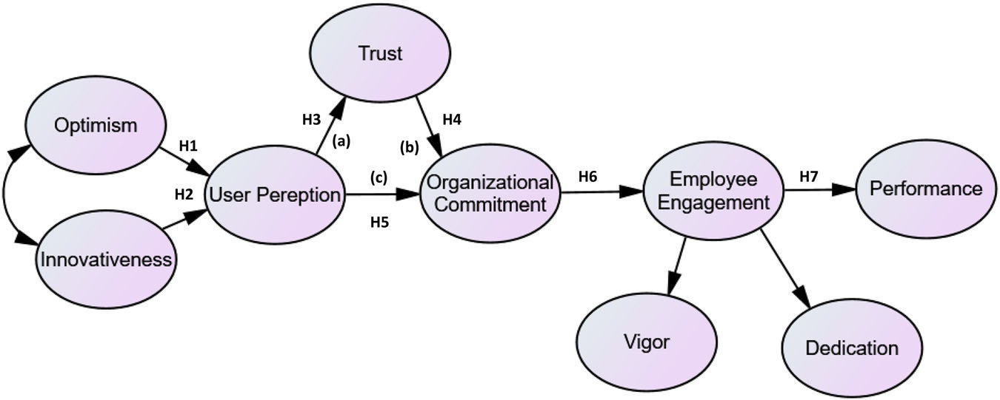
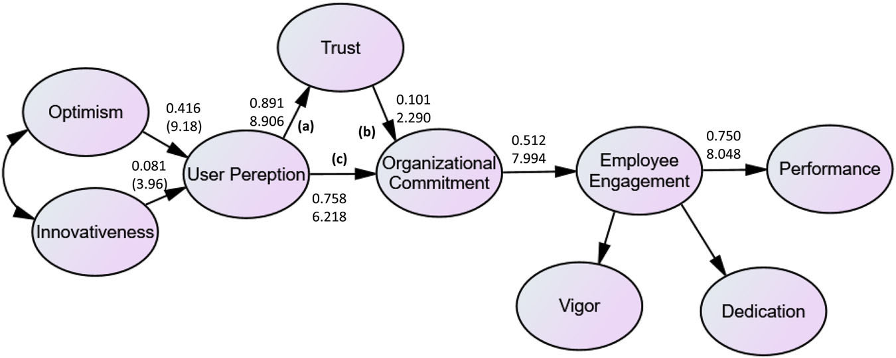

Prasad 2024 Generative AI HRM Trust
Prasad & De (2024). Generative AI as a Catalyst for HRM Practices: Mediating Effects of Trust
作者：K. D. V. Prasad, Tanmoy De 來源：Humanities & Social Sciences Communications（Nature portfolio） 方法：問卷調查（N=500）；結構方程模型（SEM/AMOS 28）；TAM-SOR-TRI 複合框架
摘要
本研究調查生成式 AI 工具對人力資源管理（HRM）實踐的影響，以及信任（trust）在使用者感知與組織承諾之間的中介效果。以印度資訊科技產業員工為樣本，整合 TAM（科技接受模型）、SOR（刺激-有機體-反應）框架與 TRI（科技準備指數），測量 9 個反映性構念。
研究架構

Figure 1 呈現本研究的理論框架：樂觀性（Optimism）和創新性（Innovativeness）影響使用者感知（User Perception = 易用性 + 有用性），信任（Trust）作為中介變項，影響路徑為使用者感知 → 組織承諾 → 員工投入（Vigor + Dedication）→ 員工績效。
主要發現
所有 7 個假設均獲支持：
| 假設 | 路徑 | β | t值 |
|---|---|---|---|
| H1 | 樂觀性 → 使用者感知 | 0.416 | 9.176*** |
| H2 | 創新性 → 使用者感知 | 0.081 | 3.960*** |
| H3 | 使用者感知 → 信任 | 0.891 | 8.906*** |
| H4 | 信任 → 組織承諾 | 0.101 | 2.290* |
| H5 | 使用者感知 → 組織承諾 | 0.758 | 6.218*** |
| H6 | 組織承諾 → 員工投入 | 0.512 | 7.994*** |
| H7（中介） | 使用者感知 → 信任 → 組織承諾 | 部分中介 | — |
信任的中介效果：信任對使用者感知與組織承諾的關係產生部分中介（partial mediation），而非完全中介。

Figure 4 呈現帶有路徑係數的結構模型結果圖，顯示各假設的標準化路徑係數。
重點發現
- GenAI user perception + organizational commitment mediated by trust in IT sector
- optimism and innovativeness positively predict GenAI user perception in workplace
- employee engagement mediates organizational commitment effect on performance in GenAI context
方法
→ Prasad 2024 Methods
評估
本研究樣本來自印度 IT 產業，聚焦於 HRM 脈絡，與傳播/新聞研究的關聯較間接，但對「信任在 GenAI 採用中的角色」提供了量化證據，可作為 AI 信任研究的背景參考。TAM-SOR-TRI 整合框架設計值得注意。